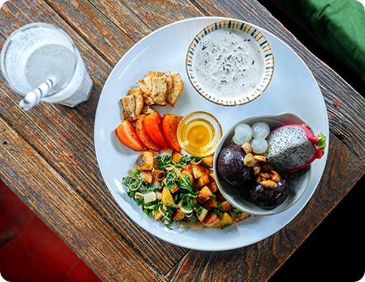
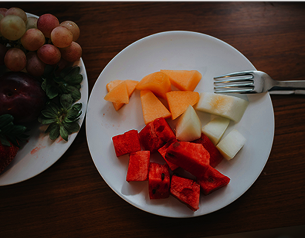
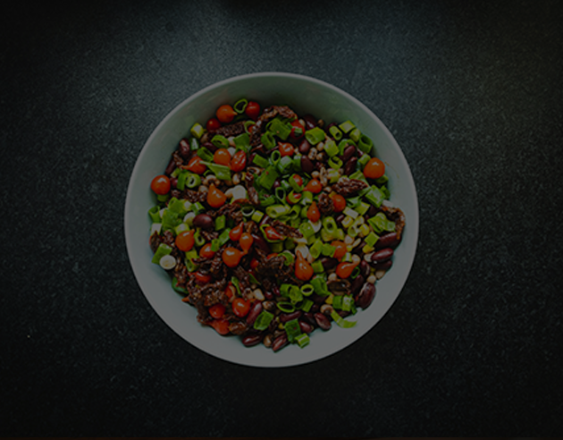

더 깨끗한 재료
더 건강한 일상
채소와 곡물, 과일이 가진
본연의 에너지와 맛을 이용한 플랜트 레시피
몸에 부담을 주지 않는 식단이 주는 건강한 일상
더 깨끗한 재료
더 건강한 일상
채소와 곡물, 과일이 가진
본연의 에너지와 맛을 이용한 플랜트 레시피
몸에 부담을 주지 않는 식단이 주는 건강한 일상

건강한 식문화에 대한 고민에서 출발한 브랜드입니다.
음식을 선택하는 기준이 한 끼를 넘어,
나를 이루는 습관이 된다고 생각합니다.
플랜트 기반 식단이
일상의 리듬을 부드럽게 채우며,
몸도 마음도 편안해지는 변화를 만들어냅니다.
크리미한 딥 소스와 함께 즐기는 균형잡
힌 식물성 플레이트 메뉴
신선한 제철 채소를 가볍게 볶아낸 메뉴.
고소한 풍미와 식감이 최고
콩류,렌틸,두부,병아리콩을 메인
으로 한 고단백 플랜트 메뉴.
간단하게 즐길 수 있는 비건 스낵&
사이드 메뉴.

매일 아침 준비가 너무 쉬워졌어요.
바쁜 출근 시간에 따로 요리할 필요 없이 간편하게 한 끼를 챙길 수 있어서 너무 만족해요. 특히 신선한 재료 느낌이 살아있어서 먹을 때마다 기분까지 좋아지는 느낌이에요. 몸도 가벼워지고 하루가 달라졌어요.
먹방고고님

맛도 좋고 재료가 정직해서 믿음이 가요
다이어트 식단은 대체로 맛이 없다고 생각했는데, 이건 다르더라고요. 달지 않고 은은하게 사과 향이 느껴져서 부담 없이 먹을 수 있어요.
요즘은
점심에도 자주 먹고 있어요. 자연스러운 맛이라 계속 손이 가요.
비건매니악님